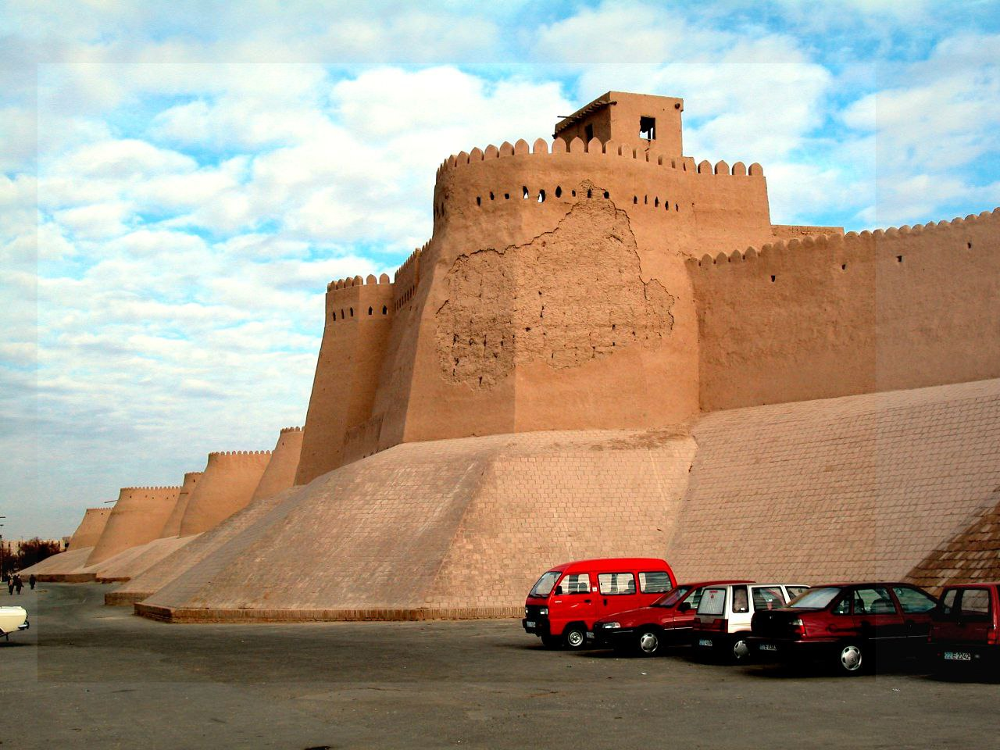
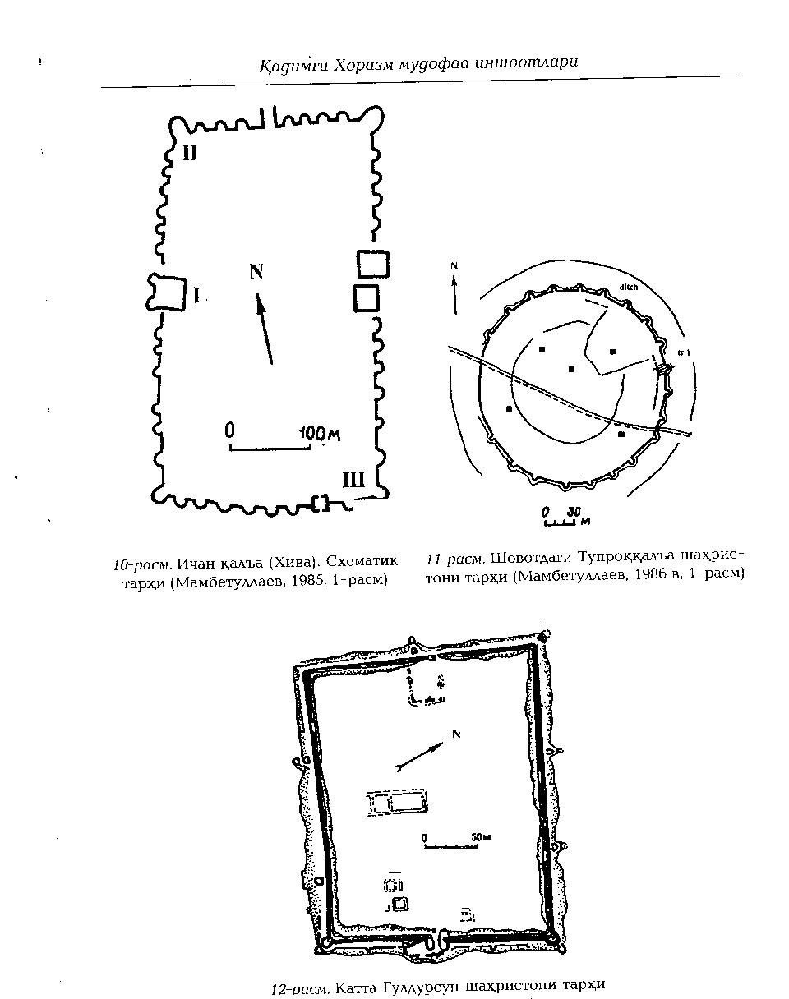

"XIVADAGI “ICHAN QAL’A"
1. Me’moriy inshootning nomi:
"XIVADAGI “ICHAN QAL’A"
2. Me’moriy inshoot tiklangan yil:
I-IV asrga oid
3. Me’moriy inshoot joylashgan manzil:
Xorazm viloyati Xiva shahri hududida joylashgan.
4. Me’moriy inshootning qurilish materiallari:
Xom g‘isht, paxsa - guvala, qum, alebastr-ganch, yog‘och
5. Inshootning bosh fasadi h.k.lar:


6. Me’moriy inshootning o‘lchamlari
Qal’a to‘g‘ri to‘rtburchak shaklida qurilgan bo‘lib, uzunligi 650 metr, eni 400 metr, jami 26 gektar maydonni egallaydi. “Ichan Qal’a paxsa devorining umumiy o‘lchami – 2200 metr bo‘lib, qal’aning devorining balandligi – ba’zi joylarida 8,0 metr, ba’zi joylarida esa -10,0 metrga yetadi.
7. Me’moriy inshoot to‘g‘risida tarixiy ma’lumot:
Ichan Qal’a” XX asr boshlariga kelib, butun boshli yaxlit me’morchilik kompozisiyasiga asoslangan ichki shahriga aylangan. Qal’a rejasi bo‘yicha barcha yo‘nalishlarda devorlardan tashqi tomonga 10-18 m o‘lchamda oval shaklda rejada butun perimetr bo‘ylab 25ta bo‘rtib chiqqan kungralar mavjud. Bunday kungralar harbiy maqsadlardan tashqari qurilish qoidalari nuqtai nazaridan ham to‘g‘ri yechim bo‘lgan. Qal’aning pastki qismining eni 7,0 – 12,0 metr bo‘lib, qal’aning tepa qismining eni esa 2,0 – 4,0 metrdir. Qal’aning bahaybat ko‘rinadigan minora-burjlari orasidagi masofa 30,0–50,0 metrni tashkil etadi.
Qal’aning devor qismi to‘la xom-loy, paxsadan tiklangan va devorning pastki qismlari esa katta-katta guvalaklardan terib chiqilgan. Xorazm vohasida paxsa devorlarni atmosfera suvlaridan himoyalash maqsadida ularni “somon-loy” bilan suvab, yuqori sifatli qilib loy pishitib himoya qatlamini ishlaydilar.
8. Me’moriy inshootning texnik holati:
5% devor konstruksiyalari ekologik va texnogen ta’sirlar natijasida yo‘qolib ketgan, texnik holati yaxshi.
BOSH SAHIFAGA QAYTISH